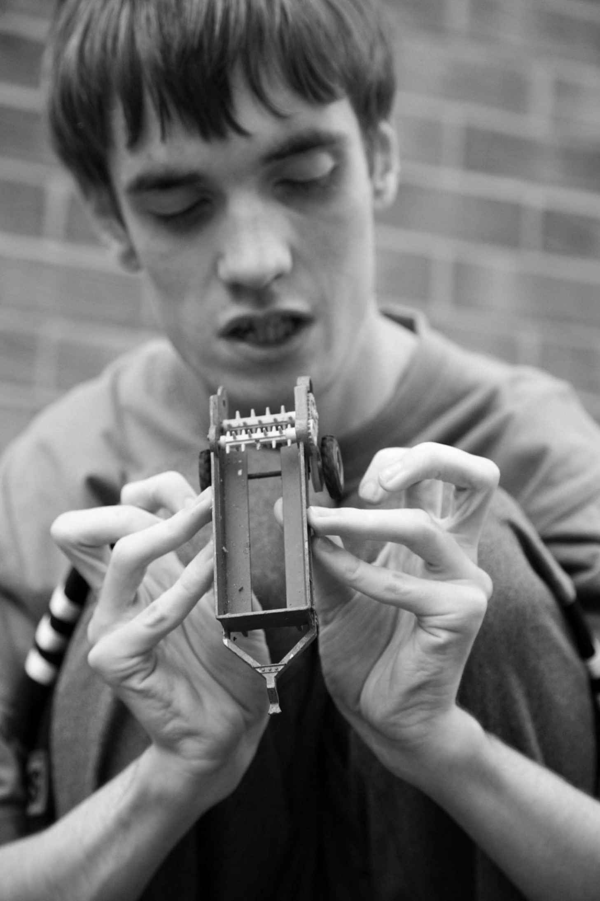

不同的自闭症人士都曾写过他们对细节的热爱及专注细节的能力。对细节的专注兴趣在别人看起来很狭窄，而狭窄的兴趣是自闭症谱系障碍，特别是阿斯伯格综合征诊断的核心特征。

图16 当男孩看他的玩具车时，他看见各种通常会逃过我们眼睛的细节。似乎这些细节远比整个物体更重要。因此男孩不只是把玩具车当车玩，而且更感兴趣于它的零部件，特别是那些可以按、转、扭的部件
患有阿斯伯格综合征的查尔斯在一封电子邮件中写道：“我有异乎寻常的强烈而狭窄的兴趣。这是个最贴切、最明显适用于我的特征。在十一岁到十八岁间，我对数学的确有极其强烈的兴趣。从四岁半到十三岁左右我对宝贝熊鲁柏非常感兴趣。从七岁左右到十三岁我对天文学非常感兴趣。最近几年我开始对学习外语特别感兴趣。”查尔斯天赋异禀。很典型的是，他描述的各种兴趣互不相关。它们突兀地开始和结束，但很明显持续相当长时间。